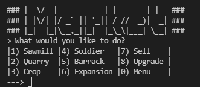
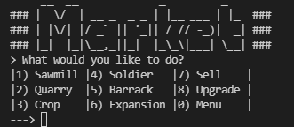

Language: C#
Retrowave is a minimalist driving game set in a retro environment.
I developed this game in June 2020 as my first Mobile game using Unity,
I then published it on the Play Store and it has over 1000 downloads.
Latest release: 08/2020
Release version: 1.2.0


 
